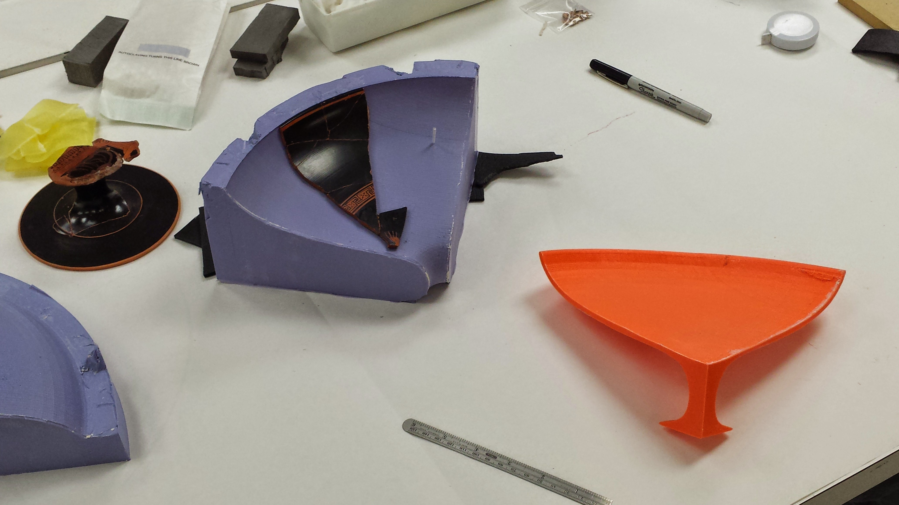

Currently...
Currently, I'm enrolled in a wonderful code immersion class with Tech Talent South in Atlanta that is talking up the majority of my time until early March. I'm focusing on augmenting my skillset to include basic coding in order to enhance my knowledge and capacity for working with new softwares. With this I hope to find new ways of tackling archeological evidence and even look into design new ways of analysing the mounds of data that we unearth every year.

Recently...
I've recently finished up a project with the Michael C. Carlos Museum in Atlanta, GA with the conservation team there. I was working with conservator Katie Etre to reassemble an important, but very fragmentary, classical vase. I laser scanned the fragments, created a complete reconstruction in Autodesk 3ds Max, and then 3d printed a facsimile from which Ms. Etre could work.
Last Summer...
This past summer I worked as a digital archeologist and a photogrammetry specialist at three different archaeological sites. Working as the architectural assistant to Dr. David Scahill, I worked on the acropolis at Selinunte in Sicily (The IFA at NYU); the Ismenion Hill at Thebes in Greece (Bucknell University); and the Vjose River Valley Archeological Project in Albania (Penn State).